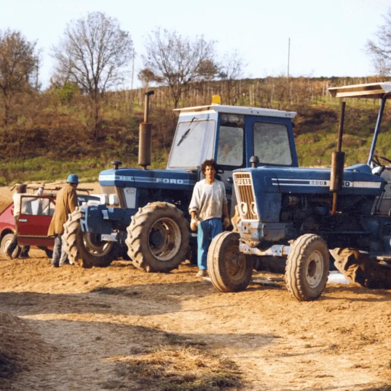
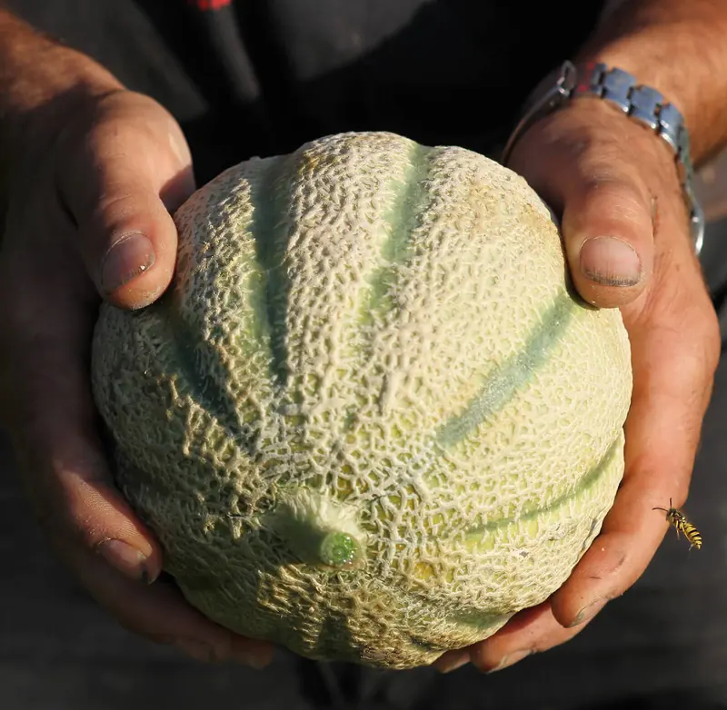

Azienda agricola
Una famiglia, una terra, trent'anni di passione.
Giugno 1995, Todi. La famiglia Spinetti pianta il seme di una piccola realtà agricola nata per produrre e vendere i propri meloni. La passione per la terra, la dedizione al lavoro e il terreno tipico umbro danno vita a un frutto dal profumo inconfondibile e dal sapore zuccherino, richiesto sul mercato nazionale ed estero.
-
1995
Le radici
Nasce Top Melon, azienda familiare dedicata al melone.
-
2009
La crescita
Apre il nuovo magazzino: Top Melon diventa un'azienda agricola a tutti gli effetti, con 10 soci conferitori in tutta Italia.
-
2017
Nuovi orizzonti
Oltre al melone arrivano zucchine, angurie midi e brassiche.
-
Oggi
Un riferimento
Una delle realtà agricole più importanti d'Italia, con lo stesso amore degli inizi.